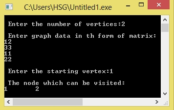

/*C Program to implement Breadth First Search*/
#include<stdio.h>
#include<conio.h>
int x[20][20],y[20],visited[20],n,i,j,f=0,r=-1;
void bfs(int v)
{
for(i=1;i<=n;i++)
if(x[v][i] && !visited[i])
y[++r]=i;
if(f<=r)
{
visited[y[f]]=1;
bfs(y[f++]);
}
}
void main()
{
int v;
printf("\n Enter the number of vertices:");
scanf("%d",&n);
for(i=1;i<=n;i++)
{
y[i]=0;
visited[i]=0;
}
printf("\n Enter graph data in th form of matrix:\n");
for(i=1;i<=n;i++)
for(j=1;j<=n;j++)
scanf("%d",&x[i][j]);
printf("\n Enter the starting vertex:");
scanf("%d",&v);
bfs(v);
printf("\n The nodes which can be visited:\n");
for(i=1;i<=n;i++)
if(visited[i])
printf("%d\t",i);
else
printf("\n Breadth First Search is not possible");
getch();
}
Output:
